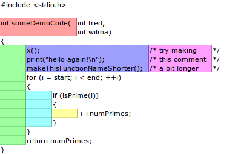

File Structure
Directory
Basic File structure. The "lib" dir. contain libraries that don't get edited and are global to the project.
- Project
- _assets
- --css
- ---lib
- grid.html
- html5-reset.html
- global.html
- resp-carousel
- sitename-style.css
- sitename-tables.css
- sitename-forms.css
- sitename-color.css
- sitename-masthead.css
- sitename-nav.css
- ---lib
- --js
- ---lib
- jquery-version#.js
- jquery-ui-version#.js
- jquery-ajax-includes.js
- jquery.datatables.js
- jquery.details.js
- etc, all non-changing core libraries
- script.js
- selectivizer.js
- sitename-toolbars.js
- sitename-nav-menus.js
- sitename-recordtools.js
- sitename-search.js
- ---lib
- --img
- ---base
- ---datatables
- ---flexslider
- ---icons
- ---logos
- ---media-gallery tools-default.png tools-222222.png tools-888888.png tools-ffffff.png
- --webfonts
- 2214B4_0_0.eot
- 2214B4_0_0.svg
- 2214B4_0_0.woff
- --css
- html
- xxx.html
- xxx.html
- --ajax
- xxx.html
- xxx.html
- --print
- xxx.html
- xxx.html
- _assets
HTML Template
Naming Conventions
CSS class names are all lower case names with hyphens
.sections-heading {
border: none;
margin: 0;
padding: 0;
}
HTML Comments
HTML Comments will make it easier for other developers to read through the architecture. Comments will be dynamicaly removed during gzip process.
at the begin the comment should reference the modules function. At the end, the comment uses the format forward slash and function.
Code style
General Style Rules
Omit the protocol from embedded resources.
Omit the protocol portion (http:, https:) from URLs pointing to images and other media files, style sheets, and scripts unless the respective files are not available over both protocols.
Omitting the protocol—which makes the URL relative—prevents mixed content issues and results in minor file size savings.
/* Not recommended */
.example {
background: url(http://www.google.com/images/example);
}
/* Recommended */
.example {
background: url(//www.google.com/images/example);
}
General Formatting
Tab Indents
it's important to be consistent throughout the html code. We are using four spaces to indent the code. Use one tab to indent the start of the line, then one tab per indent level.
Advantages with Tabs
- Allow mistakes to be more noticeable, it's annoying to micro manage to spaces.
- are consistent throughout
- are customizable, you can specify in the options of the editor how wide they are.
- tend to work better in IDEs. 
Capitalization
All code has to be lowercase: This applies to HTML element names, attributes, attribute values (unless text/CDATA), CSS selectors, properties, and property values (with the exception of strings).
Home

/* Not recommended */
color: #E5E5E5;
/* Recommended */
color: #e5e5e5;
Trailing Whitespace
Remove trailing white spaces.
Trailing white spaces are unnecessary and can complicate diffs.
What?_
Yes please.
General Meta Rules
Encoding
Use UTF-8 (no BOM).
Make sure your editor uses UTF-8 as character encoding, without a byte order mark.
Specify the encoding in HTML templates and documents via . Do not specify the encoding of style sheets as these assume UTF-8.
(More on encodings and when and how to specify them can be found in Handling character encodings in HTML and CSS.)
Comments
Explain code as needed, where possible.
Use comments to explain code: What does it cover, what purpose does it serve, why is respective solution used or preferred?
(This item is optional as it is not deemed a realistic expectation to always demand fully documented code. Mileage may vary heavily for HTML and CSS code and depends on the project’s complexity.)
Action Items
Mark todos and action items with TODO.
Highlight todos by using the keyword TODO only, not other common formats like @@.
Append a contact (username or mailing list) in parentheses as with the format TODO(contact).
Append action items after a colon as in TODO: action item.
{# TODO(john.doe): revisit centering #}
Test
- Apples
- Oranges
HTML Style Rules
Doc Type
Use HTML5.
Use valid HTML code unless that is not possible due to otherwise unattainable performance goals regarding file size.
Use tools such as the W3C HTML validator to test.
Using valid HTML is a measurable baseline quality attribute that contributes to learning about technical requirements and constraints, and that ensures proper HTML usage.
HTML Validity
Use valid HTML where possible.
Use valid HTML code unless that is not possible due to otherwise unattainable performance goals regarding file size.
Use tools such as the W3C HTML validator to test.
Using valid HTML is a measurable baseline quality attribute that contributes to learning about technical requirements and constraints, and that ensures proper HTML usage.
Test
This is only a test.
Test
This is only a test.
Semantics
Use HTML according to its purpose.
Use elements (sometimes incorrectly called “tags”) for what
they have been created for. For example, use heading
elements for headings, p elements for
paragraphs, a elements for anchors, etc.
Using HTML according to its purpose is important for accessibility, reuse, and code efficiency reasons.
All recommendations
All recommendations
Multimedia Fallback
Provide alternative contents for multimedia.
For multimedia, such as images, videos, animated objects via
canvas, make sure to offer alternative
access. For images that means use of meaningful alternative
text (alt) and for video and audio transcripts
and captions, if available.
Providing alternative contents is important for
accessibility reasons: A blind user has few cues to tell
what an image is about without @alt, and other
users may have no way of understanding what video or audio
contents are about either.
(For images whose alt attributes would
introduce redundancy, and for images whose purpose is purely
decorative which you cannot immediately use CSS for, use no
alternative text, as in alt="".)

Seperation of Concerns
Separate structure from presentation from behavior.
Strictly keep structure (markup), presentation (styling), and behavior (scripting) apart, and try to keep the interaction between the three to an absolute minimum.
That is, make sure documents and templates contain only HTML and HTML that is solely serving structural purposes. Move everything presentational into style sheets, and everything behavioral into scripts.
In addition, keep the contact area as small as possible by linking as few style sheets and scripts as possible from documents and templates.
Separating structure from presentation from behavior is important for maintenance reasons. It is always more expensive to change HTML documents and templates than it is to update style sheets and scripts.
HTML sucks
HTML sucks
I’ve read about this on a few sites but now I’m sure:
HTML is stupid!!1
I can’t believe there’s no way to control the styling of
my website without doing everything all over again!
My first CSS-only redesign
My first CSS-only redesign
I’ve read about this on a few sites but today I’m actually
doing it: separating concerns and avoiding anything in the HTML of
my website that is presentational.
It’s awesome!
Entity References
Do not use entity references.
There is no need to use entity references like
—, ”, or
☺, assuming the same encoding
(UTF-8) is used for files and editors as well as among
teams.
The only exceptions apply to characters with special meaning
in HTML (like < and &) as
well as control or “invisible” characters (like no-break
spaces).
The currency symbol for the Euro is “&eur;”.
The currency symbol for the Euro is “€”.
Optional Tags
Omit optional tags (optional).
For file size optimization and scannability purposes, consider omitting optional tags. The HTML5 specification defines what tags can be omitted.
(This approach may require a grace period to be established as a wider guideline as it’s significantly different from what web developers are typically taught. For consistency and simplicity reasons it’s best served omitting all optional tags, not just a selection.)
Spending money, spending bytes
Sic.
Saving money, saving bytes
Qed.
Type Attributes
Omit type attributes for style sheets and scripts.
Do not use type attributes for style sheets
(unless not using CSS) and scripts (unless not using
JavaScript).
Specifying type attributes in these contexts is
not necessary as HTML5 implies
text/css
and
text/javascript
as defaults. This can be safely done even for older browsers.
HTML Formatting
General
Use a new line for every block, list, or table element, and indent every such child element.
Independent of the styling of an element (as CSS allows
elements to assume a different role per display
property), put every block, list, or table element on a new
line.
Also, indent them if they are child elements of a block, list, or table element.
(If you run into issues around whitespace between list items it’s acceptable to put all li elements in one line. A linter is encouraged to throw a warning instead of an error.)
Space, the final frontier.
- Moe
- Larry
- Curly
Income
Taxes
$ 5.00
$ 4.50
HTML Quotation Marks
When quoting attributes values, use double quotation marks.
Use double ("") rather than single quotation marks ('') around attribute values.
Sign in
Sign in
CSS Style Rules
CSS Validity
Use valid CSS where possible.
Unless dealing with CSS validator bugs or requiring proprietary syntax, use valid CSS code.
Use tools such as the W3C CSS validator to test.
Using valid CSS is a measurable baseline quality attribute that allows to spot CSS code that may not have any effect and can be removed, and that ensures proper CSS usage.
Check and clean up the CSS in online tools like CleanCSS
ID and Class Naming
- Avoid IDs (they're better used for JS only)
- Use readable class names
Use meaningful or generic ID and class names.
Instead of presentational or cryptic names, always use ID and class names that reflect the purpose of the element in question, or that are otherwise generic.
Names that are specific and reflect the purpose of the element should be preferred as these are most understandable and the least likely to change.
Generic names are simply a fallback for elements that have no particular or no meaning different from their siblings. They are typically needed as “helpers.”
Using functional or generic names reduces the probability of unnecessary document or template changes.
/* Not recommended: meaningless */
#yee-1901 {}
/* Not recommended: presentational */
.button-green {}
.clear {}
/* Recommended: specific */
#gallery {}
#login {}
.video {}
/* Recommended: generic */
.aux {}
.alt {}
ID and Class Name Style
Use ID and class names that are as short as possible but as long as necessary.
Try to convey what an ID or class is about while being as brief as possible.
Using ID and class names this way contributes to acceptable levels of understandability and code efficiency.
/* Not recommended */
#navigation {}
.atr {}
/* Recommended */
#nav {}
.author {}
Type Selectors
Avoid qualifying ID and class names with type selectors.
Unless necessary (for example with helper classes), do not use element names in conjunction with IDs or classes.
Avoiding unnecessary ancestor selectors is useful for performance reasons.
/* Not recommended */
ul#example {}
div.error {}
/* Recommended */
#example {}
.error {}
Shorthand Properties
Use shorthand properties where possible.
CSS offers a variety of shorthand
properties (like font)
that should be used whenever possible, even in cases where
only one value is explicitly set.
Using shorthand properties is useful for code efficiency and understandability.
/* Not recommended */
border-top-style: none;
font-family: palatino, georgia, serif;
font-size: 100%;
line-height: 1.6;
padding-bottom: 2em;
padding-left: 1em;
padding-right: 1em;
padding-top: 0;
/* Recommended */
border-top: 0;
font: 100%/1.6 palatino, georgia, serif;
padding: 0 1em 2em;
0 and Units
Omit unit specification after “0” values.
Do not use units after 0 values unless they are
required.
margin: 0;
padding: 0;
Leading 0s
Omit leading “0”s in values.
Do not put 0s in front of values or lengths
between -1 and 1.
font-size: .8em;
Hexidecimal Notation
Use 3 character hexadecimal notation where possible.
For color values that permit it, 3 character hexadecimal notation is shorter and more succinct.
/* Not recommended */
color: #eebbcc;
/* Recommended */
color: #ebc;
RGB Notation
It's all a matter of preference and legibility - if you're maintaining a huge CSS file, being able to look at the colour value and know what colour it is, is a really good advantage. Even more advantageous is using a preprocessor like SCSS to add a kind of programmability to CSS
If you want to input an RGBA value, hex notation is not supported; i.e., you can't fake it with #FFFFFFff. As a matter of fact, the alpha value must be a number between 0.0 and 1.0, inclusive. (Check out this page for browser support -- as always, IE is leading the pack here. ;) )
HSL and HSLA color support -- which is very designer friendly -- is also provided with a similar syntax to the RGB() style. If you are using RGBA, then use decimal values over hex codes for consistency.
color: rgb(255, 255, 255);
It's all a matter of preference and legibility - if you're maintaining a huge CSS file, being able to look at the colour value and know what colour it is, is a really good advantage. Even more advantageous is using a preprocessor like SCSS to add a kind of programmability to CSS
Maintaining the CSS becomes less of an issue.
#title { color: #abcdef; }
@base-color: #abcdef;
#title { color: @base-color; }
Prefixes
Prefix selectors with an application-specific prefix (optional).
In large projects as well as for code that gets embedded in other projects or on external sites use prefixes (as namespaces) for ID and class names. Use short, unique identifiers followed by a dash.
Using namespaces helps preventing naming conflicts and can make maintenance easier, for example in search and replace operations.
.adw-help {} /* AdWords */
#maia-note {} /* Maia */
ID and Class Name Delimiters
Separate words in ID and class names by a hyphen.
Do not concatenate words and abbreviations in selectors by any characters (including none at all) other than hyphens, in order to improve understanding and scannability.
/* Not recommended: does not separate the words “demo” and “image” */
.demoimage {}
/* Not recommended: uses underscore instead of hyphen */
.error_status {}
/* Recommended */
#video-id {}
.ads-sample {}
Hacks
Avoid user agent detection as well as CSS “hacks”—try a different approach first
It’s tempting to address styling differences over user agent detection or special CSS filters, workarounds, and hacks. Both approaches should be considered last resort in order to achieve and maintain an efficient and manageable code base. Put another way, giving detection and hacks a free pass will hurt projects in the long run as projects tend to take the way of least resistance. That is, allowing and making it easy to use detection and hacks means using detection and hacks more frequently—and more frequently is too frequently.
Feature Detection
We are using a full set of Modernizer.
Using feature detection is a more reliable mechanic to establish what you can and cannot do in the current browser, and avoid broser sniffing.
CSS Formatting
Declaration Order
Google suggests: Alphabetize declarations.
Put declarations in alphabetical order in order to achieve consistent code in a way that is easy to remember and maintain.
background: fuchsia;
border: 1px solid;
-moz-border-radius: 4px;
-webkit-border-radius: 4px;
border-radius: 4px;
color: black;
text-align: center;
text-indent: 2em;
Our current standard is to use the same order as the CSS cascade.
- Structure/Positioning
- Layout
- Typography
- Color
position: relative;
width: 100%;
margin: .2em;
padding: .2em .4em;
text-align: center;
text-indent: 2em;
color: black;
background: fuchsia;
border: 1px solid;
-moz-border-radius: 4px;
-webkit-border-radius: 4px;
border-radius: 4px;
Ignore vendor-specific prefixes for sorting purposes. However, multiple vendor-specific prefixes for a certain CSS property should be kept sorted (e.g. -moz prefix comes before -webkit).
Block Content Indentation
Indent all block content.
Indent all block content, that is rules within rules as well as declarations, so to reflect hierarchy and improve understanding.
@media screen, projection {
html {
background: #fff;
color: #444;
}
}
Declaration Stops
Use a semicolon after every declaration.
End every declaration with a semicolon for consistency and extensibility reasons.
/* Not recommended */
.test {
display: block;
height: 100px
}
/* Recommended */
.test {
display: block;
height: 100px;
}
Property Name stops
Use a space after a property name’s colon.
Always use a single space between property and value (but no space between property and colon) for consistency reasons.
/* Not recommended */
h3 {
font-weight:bold;
}
/* Recommended */
h3 {
font-weight: bold;
}
Declaration Block Separation
Use a space between the last selector and the declaration block.
Always use a single space between the last selector and the opening brace that begins the declaration block.
The opening brace should be on the same line as the last selector in a given rule.
#video{
margin-top: 1em;
}
/* Not recommended: unnecessary line break */
#video
{
margin-top: 1em;
}
/* Recommended */
#video {
margin-top: 1em;
}
Selector and Declaration Separation
Separate selectors and declarations by new lines.
Always start a new line for each selector and declaration.
/* Not recommended */
a:focus, a:active {
position: relative; top: 1px;
}
/* Recommended */
h1,
h2,
h3 {
font-weight: normal;
line-height: 1.2;
}
Rule Separation
Separate rules by new lines.
Always put a blank line (two line breaks) between rules.
html {
background: #fff;
}
body {
margin: auto;
width: 50%;
}
CSS Quotation Marks
Use single quotation marks for attribute selectors and property values.
Use single ('') rather than double ("")
quotation marks for attribute selectors or property values. Do not
use quotation marks in URI values (url()).
Exception: If you do need to use the @charset rule,
use double quotation marks—single
quotation marks are not permitted.
/* Not recommended */
@import url("//www.google.com/css/maia.css");
html {
font-family: "open sans", arial, sans-serif;
}
/* Recommended */
@import url(//www.google.com/css/maia.css);
html {
font-family: 'open sans', arial, sans-serif;
}
CSS Meta Rules
Section Comments
Group sections by a section comment (optional).
If possible, group style sheet sections together by using comments. Separate sections with new lines.
/* Header */
#adw-header {}
/* Footer */
#adw-footer {}
/* Gallery */
.adw-gallery {}
Final Thoughts
Section Comments
Be consistent.
If you’re editing code, take a few minutes to look at the code around you and determine its style. If they use spaces around all their arithmetic operators, you should too. If their comments have little boxes of hash marks around them, make your comments have little boxes of hash marks around them too.
The point of having style guidelines is to have a common vocabulary of coding so people can concentrate on what you’re saying rather than on how you’re saying it. We present global style rules here so people know the vocabulary, but local style is also important. If code you add to a file looks drastically different from the existing code around it, it throws readers out of their rhythm when they go to read it. Avoid this.
"Do not repeat yourself" - if it comes to the point that you have 6 Modules with the exact same properties, you'd better combine them into one Block inside your CSS. e.g.
.site-header,
.single-article,
.site-footer,
.sidebar {
background:#fff;
box-shaodw: 0 0 10px rgba(0,0,0,0.4);
border:1px solid #ccc;
}
This will be much more maintainable and with SASS you can even use the @extend feature so you do not need to write those blocks by yourself.